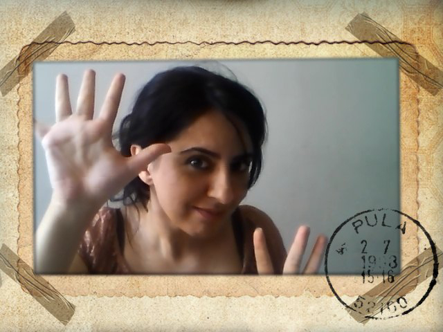

“The illiterate of the 21st century will not be those who cannot read and write, but those who cannot learn, unlearn, and relearn."
— Alvin Toffler
About Me

My name is Sara Mohsenpour. I am Iranian citizen and started studying “IMD” in May 2023 at Algonquinc College. 24 years ago I was studying agriculture and animal science at Urmia University. It was a very good job and had a very good income. The only downside was that I worked two days a week and I was free and bored the rest of the week. So I decided to do something completely different. That's how I got into publishing.
When I was a kid, I never guessed that I would study and work on such irrelevant subjects someday. Back then, I only liked cows because they were so big and they made strange noises. The second thing I liked was sitting in the attic of my grandfather's house and reading old and strange stories. Now my life seems to be divided between cows and stories.
My Hobies
There are many things I like in this world, but I'll tell you just a few:
- Painting on canvas
- Watching classic movies on holidays
- Eating chips with a lot of noise, when it's quiet everywhere.
Education Background, Work Experience, and Career Plan
As regards my education, I have a B.Sc. degree in Agricultural - Animal Science Engineering (2001). While I was a bachelor student, I began working part-time as a typist and continued to handle responsibilities in the printing business. Through that work, I acquired a range of experience and skills needed in the printing industry.Specifically, from 2002 through 2015 (when I started my own business), I handled the following positions:
- At Funoos Co. (Book Distribution Company): Project Manager (2002-2009)
- At Caravan Books Publishing House:
- Team management and working with in-house and freelance editors and production editors
- Art directing all the imprints of “Caravan Books Publishing House”
- Devising and managing the publishing schedule with utmost precision
- Jashne Kitab Magazine, executive Director
- Typesetting and designing numerous publications
In 2015, after seven years in the publishing industry, I started my own publishing house, “Jica Books”. This became the next step in my career, and I have successfully acquired a range of experience related to the business.
- My current responsibility
- Manage my company in Iran
- My near future perspective
- strong focus on digital marketing
- Creating high-quality
- engaging, and effective content
- Producing e-books and audiobooks
- Create my website
- Increase business performance